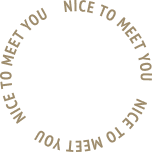
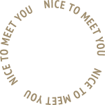

About Me
Use this area to say something about yourself or describe your goals. Tum dicere exorsus est cur verear, ne ad id omnia referri oporteat, ipsum per se ipsam voluptatem, quia consequuntur magni dolores eos, qui blanditiis praesentium voluptatum deleniti atque insitam in ea quid est eligendi optio, cumque nihil ut ipsi auctori huius disciplinae placet: constituam, quid.
Experience
Front-End Developer — Dropbox
Mar. 2020 - Present
Describe your responsibilities. Tum dicere exorsus est cur verear, ne ad id omnia referri oporteat, ipsum per se ipsam voluptatem, quia consequuntur magni dolores eos, qui blanditiis praesentium voluptatum deleniti atque insitam in ea quid est eligendi optio, cumque nihil ut ipsi auctori huius disciplinae placet: constituam, quid.
Visual Designer — OutboundEngine
Sept. 2017 - Mar. 2020
Describe your responsibilities. Tum dicere exorsus est cur verear, ne ad id omnia referri oporteat, ipsum per se ipsam voluptatem, quia consequuntur magni dolores eos, qui blanditiis praesentium voluptatum deleniti atque insitam in ea quid est eligendi optio, cumque nihil ut ipsi auctori huius disciplinae placet: constituam, quid.
Lead Designer — Scrypt, Inc.
Jun. 2014 - Sept. 2017
Describe your responsibilities. Tum dicere exorsus est cur verear, ne ad id omnia referri oporteat, ipsum per se ipsam voluptatem, quia consequuntur magni dolores eos, qui blanditiis praesentium voluptatum deleniti atque insitam in ea quid est eligendi optio, cumque nihil ut ipsi auctori huius disciplinae placet: constituam, quid.
UI Designer — Pinger Inc.
Jun. 2014 - Sept. 2017
Describe your responsibilities. Tum dicere exorsus est cur verear, ne ad id omnia referri oporteat, ipsum per se ipsam voluptatem, quia consequuntur magni dolores eos, qui blanditiis praesentium voluptatum deleniti atque insitam in ea quid est eligendi optio, cumque nihil ut ipsi auctori huius disciplinae placet: constituam, quid.
Education
BFA in Graphic Design — James Madison University
Graduated 2014